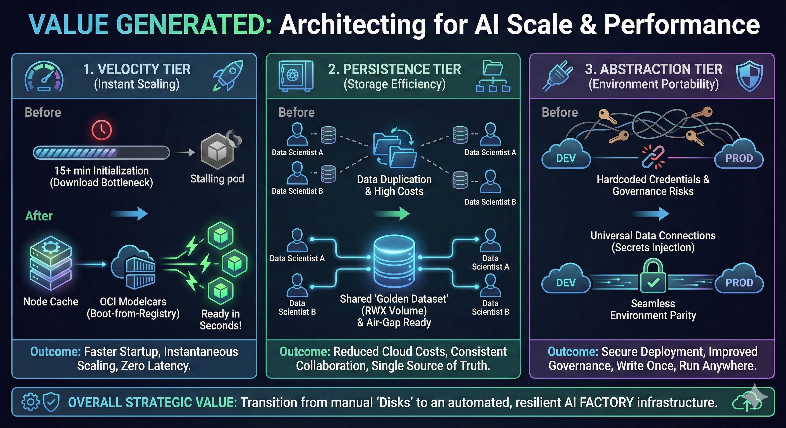

The Storage Strategy: Architecting for AI Scale
Connectivity is easy. Performance is engineering.
In the early stages of AI adoption, the primary challenge is simply access: "How do I connect my Jupyter Notebook to an S3 bucket?"
But as you move from "Science Project" to "Production Service," the challenges shift dramatically. You are no longer moving 1GB CSV files; you are serving 70GB Large Language Models (LLMs) to thousands of concurrent users, and automating complex AI Pipelines.
At this scale, storage is no longer just a place to keep files—it becomes the primary bottleneck of your entire platform.
-
The Risk: If every pod downloads a 50GB model on startup, you flood the network and stall your rollout.
-
The Cost: If your automated AI pipelines pass massive intermediate datasets back and forth to an external S3 bucket, your cloud egress bills explode and your pipelines crawl.
-
The Failure: If you rely on ephemeral storage for production serving, a single node reboot can take down your service for 20 minutes while it re-downloads assets.
In this course, you will evolve from managing "Disks" to architecting "Strategies."

The Three Pillars of AI Storage
We will replace the "One-Size-Fits-All" approach with a tiered strategy specifically designed for OpenShift AI 3.3 workloads.
1. The Velocity Tier (OCI Modelcars)
-
The Challenge: Initialization Latency. Waiting 15 minutes for a model to download before a pod becomes "Ready."
-
The Solution: Boot-from-Registry. By packaging models as OCI images (Modelcars), you leverage the cluster’s native container image puller.
-
The Outcome: Instant Scaling. The underlying layers are cached on the node. Scaling from 1 replica to 50 takes seconds, not hours, because the data is already there.
2. The Persistence Tier (Cluster Storage & Pipeline Workspaces)
-
The Challenge: S3 Ping-Ponging and Data Duplication. How do you share massive datasets efficiently between pipeline tasks or between data scientists?
-
The Solution: Shared Volumes (RWX) & Ephemeral Workspaces. OpenShift AI 3.3 shifts away from relying purely on S3 for intermediate data. We now use high-speed Persistent Volume Claims (PVCs) for both collaborative team spaces and automated Pipeline Workspaces.
-
The Outcome: High-Speed Transit. A single 1TB volume serves an entire team, and pipeline components exchange massive datasets directly via the local cluster disk without repeatedly pushing or pulling from external cloud storage.
3. The Abstraction Tier (Data Connections & GitOps)
-
The Challenge: Governance and Lock-in. Preventing hardcoded credentials and fragile database dependencies.
-
The Solution: Kubernetes-Native Abstraction. We use the new Connections API to inject standard URIs (
s3://,pvc://,oci://) via Kubernetes Secrets. Furthermore, OpenShift AI 3.3 moves pipeline storage out of internal databases and into Kubernetes API Custom Resources. -
The Outcome: Complete Portability. Your storage connections, model URIs, and entire pipeline definitions can now be fully managed by GitOps tools (like Argo CD), ensuring environment parity between Dev and Prod.
Your Mission: The "AI Factory" Blueprint
You are not just learning to run oc create secret. You are learning to build the Data Supply Chain that powers the AI Factory.
In the upcoming modules, you will:
-
Analyze the Physics: Understand why downloading models to
emptyDirkills production stability, and how Pipeline Workspaces solve S3 latency. -
Build the Highway: Deploy OCI Data Connections and master the specific URI routing formats required by RHOAI 3.3.
-
Secure the Vault: Provision Shared Storage that supports both high-speed pipelines and air-gapped model hosting.
-
Automate the Floor: Learn the "Sharp Edges" of managing external databases and GitOps pipelines.
|
The Shift in Mindset
We are stopping the practice of treating models like "files." In OpenShift AI 3.3, we treat models and pipelines like software artifacts—versioned, immutable, and natively integrated into Kubernetes. |
Ready to architect the solution? Let’s examine the blueprint.